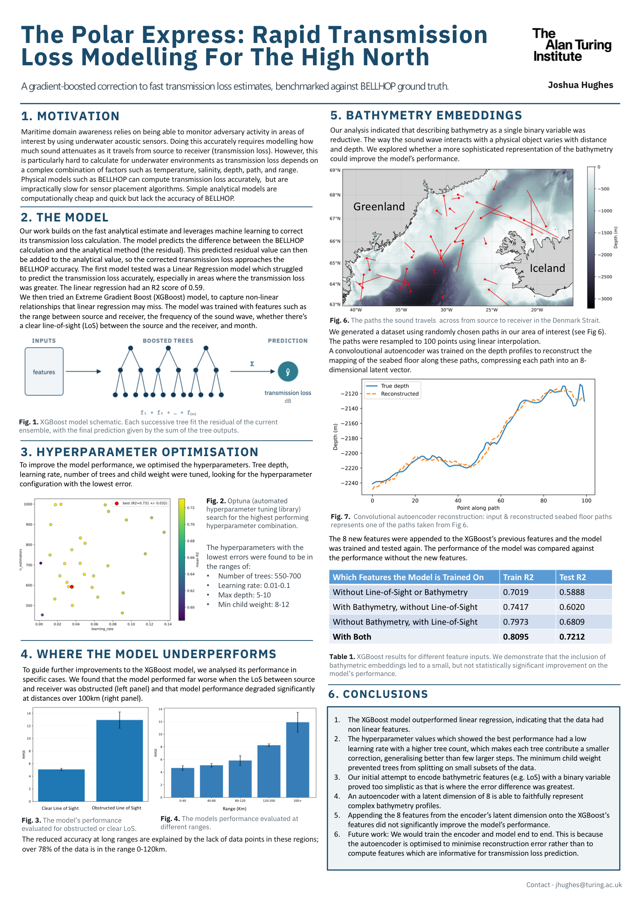

Generating Electronic Structure Datasets for ML
The focus of my BSc project is using machine learning to reduce compute for electron density calculations.
The focus of my BSc project is using machine learning to reduce compute for electron density calculations.
Simulating bcc Iron in VAMPIRE to find its Curie temperature within 1.4% of the accepted value.
During my time at The Alan Turing Institute, I worked as part of an AI Research team focused on optimising transmission loss calculations. As part of this project I made and presented a research poster.

Download poster (PDF)